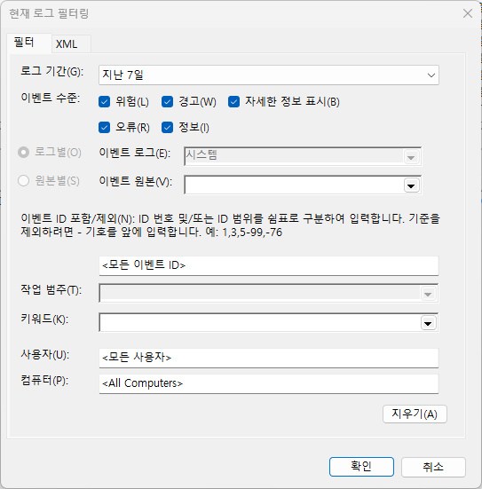
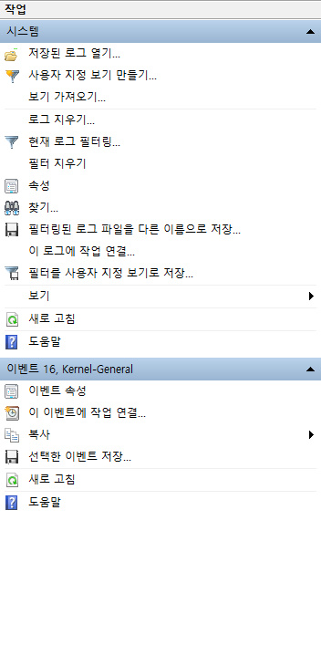
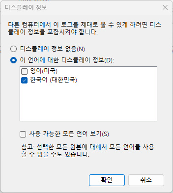

EVENT VIEWER GUIDE
오류 개수보다 발생 시각과 원본을 먼저 보세요
이벤트 뷰어에는 정상 PC에서도 경고와 오류가 기록됩니다. 실제 증상이 발생한 시각 주변의 기록만 좁혀 보는 것이 핵심입니다.
이벤트 뷰어 열기
Windows 키 + R을 누르고 eventvwr.msc를 입력합니다. 왼쪽에서 Windows 로그를 펼친 뒤 재부팅·장치·디스크 문제는 시스템, 프로그램 종료 문제는 응용 프로그램을 먼저 엽니다. 목록 전체를 고치려 하지 말고 문제가 발생한 시각의 앞뒤 5분을 확인하세요.
현재 로그 필터링
- 오른쪽의 현재 로그 필터링을 누릅니다.
- 치명적·오류·경고를 선택하고 증상이 발생한 시간 범위를 지정합니다.
- 알고 있는 이벤트 ID가 있다면 쉼표로 구분해 입력합니다. 예:
41,1001,18 - 결과에서 이벤트를 열고 일반 탭의 이벤트 ID와 원본을 함께 기록합니다.
지난 7일 필터링된 로그 파일(.evtx)로 저장하기
PowerShell이나 별도 도구 없이 이벤트 뷰어 화면만으로 최근 일주일 기록을 파일 하나로 저장할 수 있습니다. 이렇게 저장한 .evtx 파일은 진단 도구의 이벤트 뷰어 탭에 파일 첨부로 바로 불러와 분석할 수 있습니다(브라우저 안에서만 처리되며 서버로 전송되지 않습니다). 다른 컴퓨터에서 열어보거나 보관해 두고 나중에 비교할 때도 유용합니다.
- 이벤트 뷰어 왼쪽에서 Windows 로그 → 시스템(또는 확인할 로그)을 선택한 뒤 오른쪽의 현재 로그 필터링을 누릅니다. 로그 기간 드롭다운에서 지난 7일을 선택하고 확인을 누릅니다.

- 필터가 적용된 상태에서 오른쪽 작업 패널의 필터링된 로그 파일을 다른 이름으로 저장...을 클릭합니다. 이 메뉴로 저장되는 파일의 확장자는
.evtx이며, 저장 대화상자의 파일 형식도 기본값이 이벤트 파일(*.evtx)로 지정되어 있으므로 그대로 저장하면 됩니다.
- 저장 위치와 파일 이름을 정하고 저장하면 디스플레이 정보 대화상자가 나타납니다. 다른 컴퓨터에서도 메시지를 제대로 볼 수 있도록 이 언어에 대한 디스플레이 정보(D)를 선택하고 한국어(대한민국)에 체크한 뒤 확인을 누릅니다.

- 저장한
.evtx파일에는 컴퓨터 이름과 사용자 이름이 남아있을 수 있으니, 다른 사람과 공유하기 전에는 반드시 확인하세요.
XML 파일은 어떻게 얻나요?
- 이벤트 뷰어에서 Windows 로그 → 시스템 또는 응용 프로그램으로 이동합니다.
- 확인할 이벤트를 두 번 클릭하고 자세히 탭을 엽니다.
- XML 보기를 선택한 뒤 내용 영역을 클릭하고 Ctrl + A, Ctrl + C를 차례로 누릅니다.
- 진단 페이지의 이벤트 뷰어 입력창에 붙여넣습니다. 파일이 필요하면 메모장에 붙여넣고 파일 형식을 모든 파일, 인코딩을 UTF-8로 선택해
event.xml로 저장합니다.
XML은 이벤트 ID와 원본뿐 아니라 공급자, 레코드 ID, 작업 코드, 키워드, <EventData>의 세부값까지 포함할 수 있어 ID만 입력하는 것보다 분석 범위가 넓습니다. 사이트는 브라우저에서 개인정보를 가린 뒤 필요한 필드를 읽으며 서버로 업로드하지 않습니다.
진단 도구에 복사하는 방법
일반 탭의 본문을 선택해 복사하거나, 자세히 탭의 XML 보기를 선택한 뒤 전체 내용을 복사합니다. 여러 기록은 오른쪽의 선택한 이벤트 저장으로 TXT·XML 파일로 내보낸 다음 진단 화면의 파일 첨부 버튼으로 불러올 수 있습니다.
PowerShell로 필요한 기록만 확인하기
관리자 권한이 없어도 일반 시스템 로그를 읽을 수 있지만 일부 채널은 접근이 제한될 수 있습니다. 아래 명령은 최근 2시간 동안 시스템 로그에 기록된 이벤트 41, 1001, 6008을 시간·원본·수준·메시지와 함께 표시합니다.
Get-WinEvent -FilterHashtable @{
LogName='System'
Id=41,1001,6008
StartTime=(Get-Date).AddHours(-2)
} | Select-Object TimeCreated, Id, ProviderName, LevelDisplayName, Message디스크 기록을 볼 때는 Id=7,51,55,129,153, WHEA 기록은 ProviderName='Microsoft-Windows-WHEA-Logger'를 필터에 사용합니다. 출력에 사용자명이나 개인 경로가 있는지 확인한 뒤 공유하세요.
최근 7일 자료를 한 번에 저장하기
이벤트가 간헐적으로 발생해 수동으로 찾기 어렵다면 ITSVC 진단 자료 수집기를 사용할 수 있습니다. 저장할 폴더를 선택하면 최근 7일의 시스템·응용 프로그램·Setup 이벤트 로그, 이벤트 요약 CSV, 최근 미니덤프와 LiveKernelReports를 한 폴더에 정리합니다.
Windows에서 파일을 내려받은 뒤 실행하세요. 일부 로그와 덤프는 관리자 권한이 필요할 수 있습니다. 수집 파일에는 사용자 이름과 파일 경로가 포함될 수 있으므로 업로드 전에 내용을 확인하세요.
개인정보 가리기
이벤트에는 컴퓨터 이름, 사용자 이름, 파일 경로, 장치 식별자가 포함될 수 있습니다. 진단 화면은 흔한 사용자 경로와 이름 필드를 자동으로 가리지만, 결과를 다른 사람에게 공유하기 전에는 이메일 주소, 네트워크 주소, 제품 키와 개인 폴더명을 직접 확인해 제거하세요.
모든 오류가 고장은 아닙니다
DistributedCOM 10016처럼 정상 환경에서도 흔한 이벤트가 있고, Kernel-Power 41처럼 원인이 아니라 비정상 종료의 결과를 기록하는 이벤트도 있습니다. 반대로 Disk 7, Ntfs 55, WHEA-Logger 18이 같은 작업에서 반복되면 백업을 먼저 하고 하드웨어 점검 범위를 좁혀야 합니다.
증상 발생 시각 기록 → 같은 시각의 이벤트 ID와 원본 확인 → 반복 횟수 비교 → 백업 필요성 판단 → 드라이버·설정·부품 순서로 점검하세요.
공식 참고자료
자주 묻는 질문
- 이벤트 뷰어에 있는 경고를 모두 고쳐야 하나요? 아닙니다. 정상적으로 동작하는 PC에서도 이벤트 뷰어에는 경고와 오류가 꾸준히 쌓입니다. DistributedCOM 10016처럼 정상 환경에서도 흔히 보이는 이벤트가 많으므로, 목록 전체를 고치려 하지 말고 실제 증상이 발생한 시각 앞뒤 5분의 기록만 좁혀서 확인하세요.
- 관리자 권한이 없어도 이벤트 뷰어를 볼 수 있나요? 일반 시스템·응용 프로그램 로그는 관리자 권한 없이도 열람할 수 있습니다. 다만 보안 로그나 일부 채널은 접근이 제한될 수 있으며, 이 경우 관리자 권한으로 이벤트 뷰어나 PowerShell을 다시 실행해야 합니다.
- 이벤트를 캡처해서 다른 사람과 공유할 때 무엇을 가려야 하나요? 이벤트에는 컴퓨터 이름, 사용자 이름, 파일 경로, 장치 식별자 같은 개인정보가 포함될 수 있습니다. 공유 전에 이메일 주소, 네트워크 주소, 제품 키, 개인 폴더명이 남아있는지 직접 확인하고 가린 뒤 전달하세요.
최종 검토일: 2026-07-16